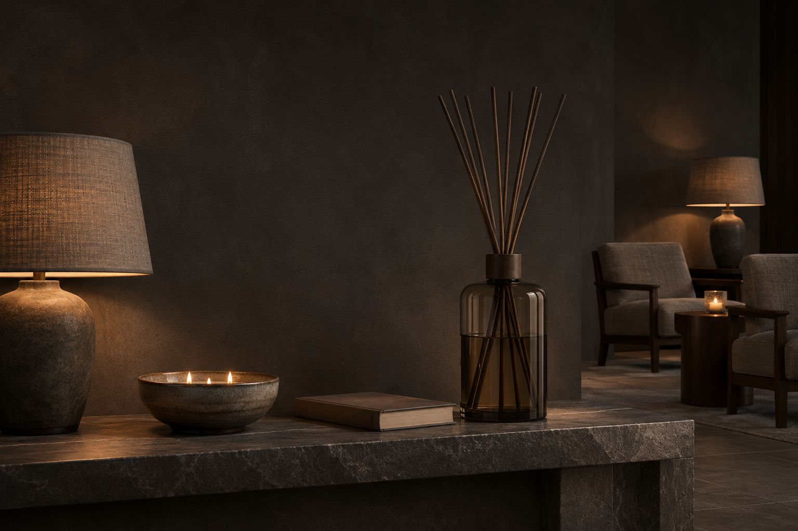
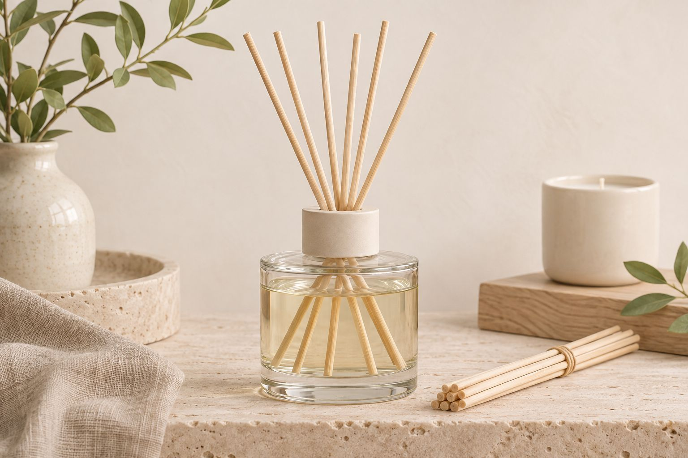

Reed diffusers
Fragrance oil, rattan reeds and a heavy glass vessel. A slow, steady scent for weeks, with no flame.

Oil. Reed. Vessel.
Every diffuser is made of three things. The reeds draw the oil up and release it into the room, slowly and without heat.
OilBlended in our studio, in twelve scents.
ReedRattan, flipped once a week.
VesselGlass or ceramic, made to be refilled.
Choose a size.
Four sizes, the same oils. Pick by the size of the room and how long you want between refills.


Change the scent, keep the vessel.
Clear glassShows the oil. Light and quiet in any room.
Smoked glassDarker, for evening rooms, bars and lobbies.
White ceramicMatte and opaque. The oil level stays out of sight.

Flip once a week.
Turn the reeds every week for a fresh lift of scent. When the oil runs low, pour in a refill and fit new reeds — the vessel stays.
See the gallery →